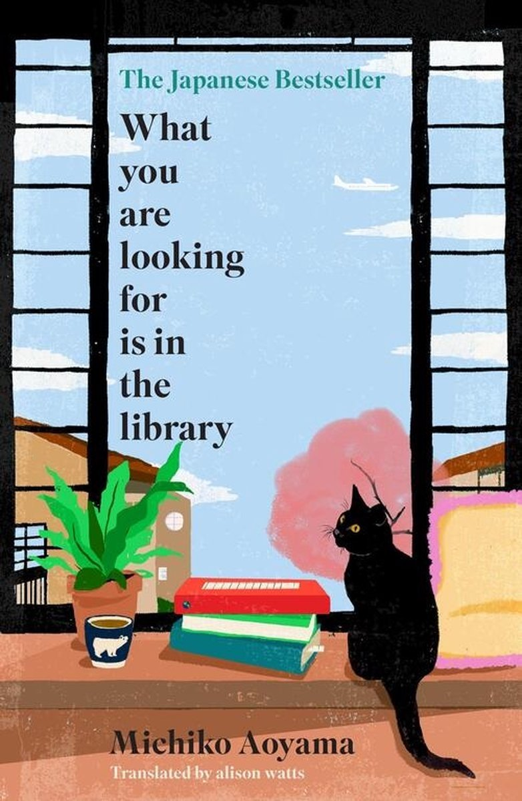

Over mij
Ik ben een eerstejaarsstudent Communication and Multimedia Design aan de Hogeschool van Amsterdam, met een sterke interesse in digitale vormgeving en gebruikservaring.
In mijn vrije tijd houd ik me graag bezig met gamen. Mijn favoriete spellen zijn: Counter Strike, GTA5 en Red Dead Redemption 2
Ik hou ervan om te bakken. Ik bak vaak taarten, koekjes en cupcakes.
Ik luister dagelijks naar muziek, in mijn playlist kan je zien naar welke genres ik luister
Ik lees soms ook boeken, mijn favoriete boeken zijn: A good girl's guide to murder en What you are looking for is in the library
